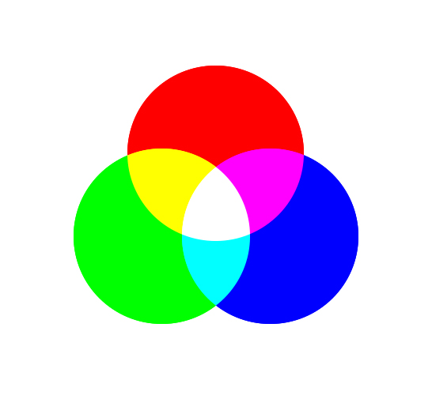
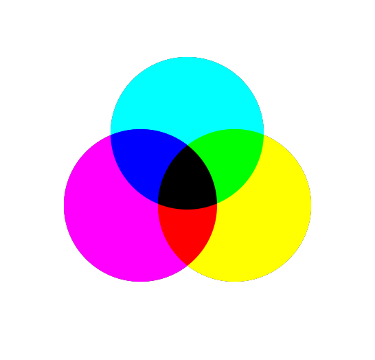
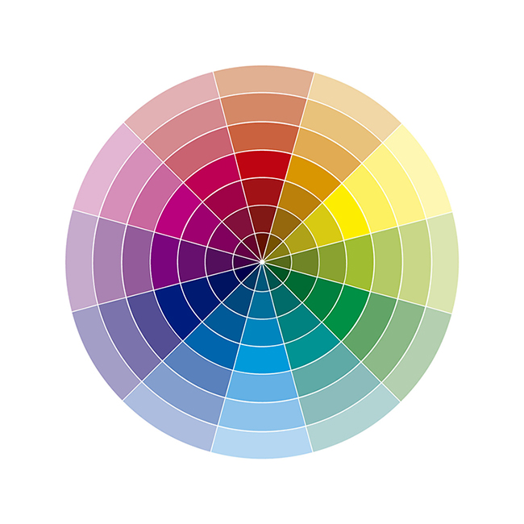
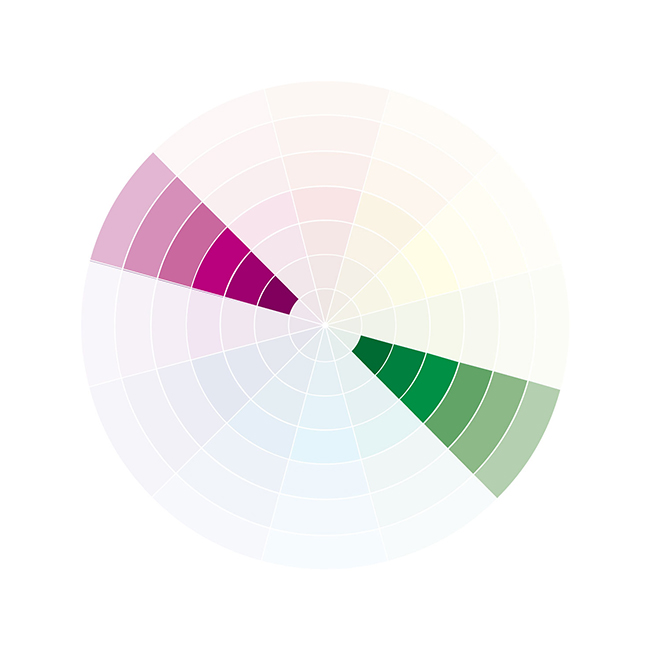
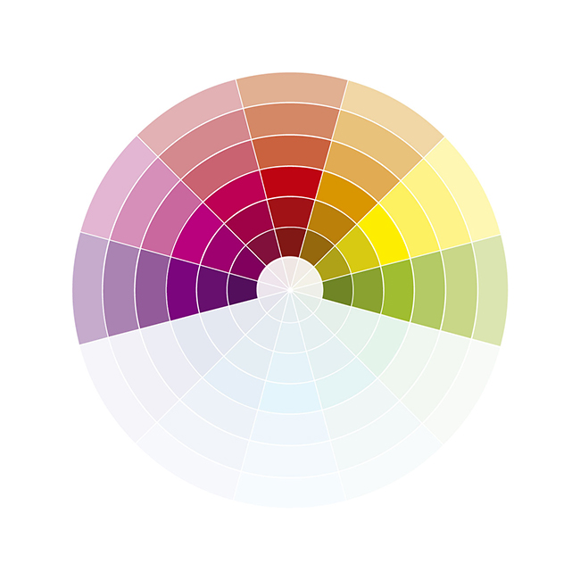
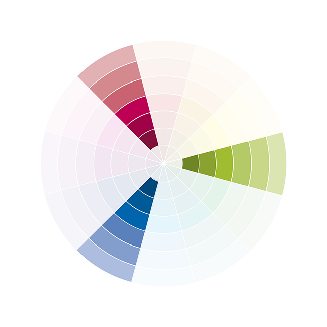
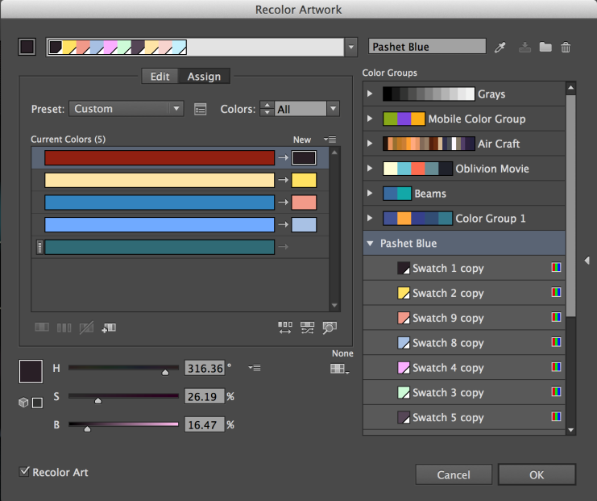
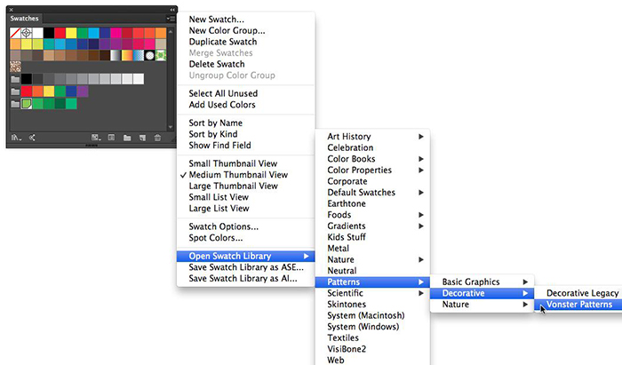
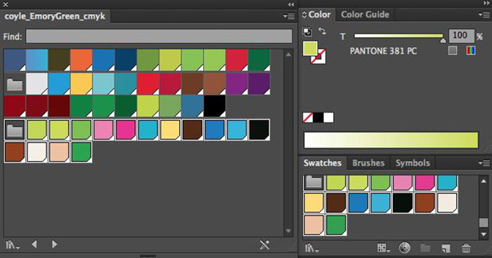
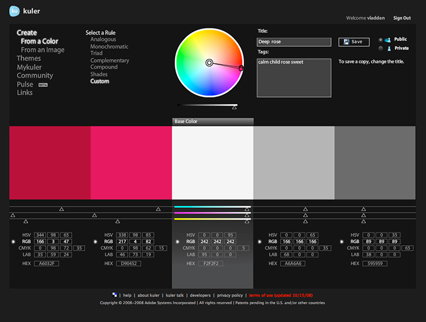

How to choose right colors for web design
One of most recently needs for today’s web development and web design world, it’s about visual perceptions on the increasing world wide web. Constantly we ask how to make a broader impact for our web projects, how to make it more remindable, more useful, more aesthetic, more helpful for our users, this is a complex and large goal that we improve day by day. But it would be a prominent start if we care about our design details.
One of the powerful design elements in web projects it’s the color scheme, right colors transform the way we are seen by others, And it’s not always an easy process. Actually, there are a lot of web pages that try to help us in this task, but if you want to make your own successful color concepts you have to take note about some simple rules.
There are only 2 ways in which we perceive colors, one its pigment colors, light affects solid materials and reflects an specific color, for example Lapis lazuli rock produce blue pigment color and it’s the beginning of all pots of blue paint in the world, in this way we know primary colors are yellow, blue and red. But we need to forget about this, they aren’t our primary colors for work anymore, we work with light colors, these colors are a real life spectrum color, that’s why we have so many colors in our screens, displays and tv sets.
{kind=link}
Pigment colors are subtractive colors, if you mix the basic pigment colors result color it´s going to be black, light colors are additive, if you mixed all you going to get white light. That’s why we always work on RGB mode, red, green and blue. But this can’t be only for make our colors work well on displays, we need to think our harmonic schemes on this primary colors too.
Subtractive model

Additive model

For improve our color schemes and make more effective blends we need to remember primary and secondary colors in our additive model, red, green, blue as primary’s and cyan, magenta and yellow as secondary’s. you can get the secondary colors blending the primary colors, and if you want to know the intermediate colors you can blend the primary colors in 2 to 1 proportion. Now we can understand the composition of the RGB color wheel, this wheel going to help us to make harmonic compositions of colors.
Color wheel

The first way for make effective blending’s of colors its using complementary colors, you can obtain this scheme using opposite colors in the wheel. This technique you can use it for improve contrast composition, this blends creates louds and attractives design styles.
Complementary colors

Analogous are nearby colors in the color wheel, with this style you can create monochromatic and color full styles, likable and comfortable designs.
Analogous colors

You can create triadic colors making an equal triangle in the color wheel, this 3 colors are going to be harmonic with each other.
Triadic colors

Also you can continue making some geometric forms over the color wheel for more complex and original color schemes, for example you can draw a square figure and this technique gives you more options and variability, very useful if you going to work with elaborated designs; you can get these colors using 4 edges in equal distribution over the color wheel. One of the unforgettable elements when we are choosing colors its saturation, this notion it’s about incorporate black or white tones to the original color, as a result you have a lighten or darken color. Some popular new trends of web design recommend less saturated colors, this means adding white percentage to the original color for make a flat style, but remember, always depends on your design concept.
Flat design examples
Another related recommendation, it’s give the same importance to white and black pure color in your composition. Remember this it’s very important for a more clean and impactful design. The color have also a very special characteristic: communicate and express emotions and sensations, although it always depends in the way you use symbolisms and other visual elements there are some facts about psychology of the color, it’s difficult to categorize this kind of adjectives because they are subjective to the viewer but we going to mention some basics about this characteristic of the color.
First element its color temperature, warm colors, for example, goes from red to yellow passing by oranges hues. These colors have a high frequency wave and we percibe it like active colors, they give a lot of energy and make more lively images.
Colder colors are different blue states, passing by various levels of saturation. This hues gives quieter down sensations, we can give a softer and smoother feeling using this range.
Also we can find many categories for this psychology states of the color for example Fresh colors, are mostly green hues that remind us to nature and some liquid states, in the same way clear and very less saturated colors get used for female concepts and darken colors can be used for formal and elegant concepts.
For finish, let’s make a small review about some useful tools for editing color in a current design program. Don’t forget comment your own preferred color tools.
- Recolor artwork – Adobe Illustrator

- illustrator color library

- Illustrator color swatches

- Adobe Kuler it’s the adobe official web site for color schemes, you can connect kuler options for creative cloud adobe.

You can find author’s work on her web site.
comments powered by Disqus